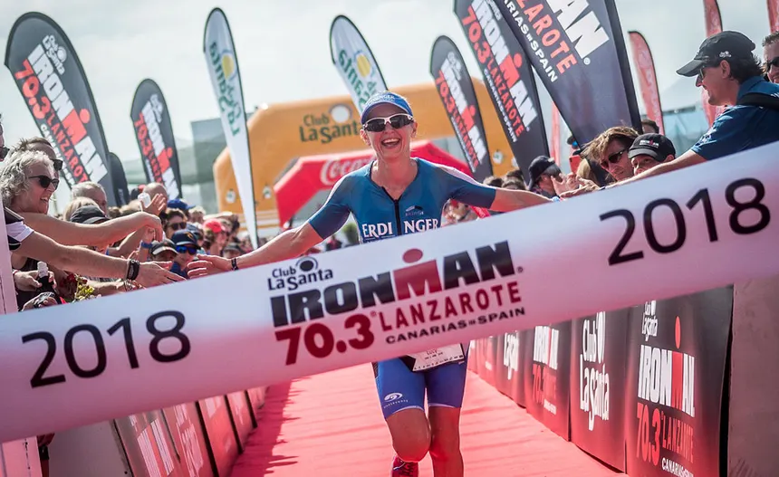

Surfing

Key Zones:
Famara (west coast) and La Santa
Notes:
Famara is the most emblematic beach, suitable for all levels, while La Santa is known for challenging waves (often called the "European Hawaii").
Lanzarote: Your Perfect Destination for Sports and Adventure
Lanzarote is globally recognized as an ideal destination for sports, benefiting from its volcanic geography, year-round warm climate, and constant trade winds. It is a major hub for active tourism and endurance sports.
The island's temperate water (average 19°C to 24°C) and wind conditions make it perfect for marine activities.
Famara (west coast) and La Santa
Famara is the most emblematic beach, suitable for all levels, while La Santa is known for challenging waves (often called the "European Hawaii").
Costa Teguise (Las Cucharas Beach) and Famara
Costa Teguise offers consistent winds, great for beginners and intermediates.
Puerto del Carmen (Playa Chica), Playa Blanca
Famous for excellent visibility. Divers can explore the Museo Atlántico (Underwater Museum in Playa Blanca) and diverse marine life.
Puerto Calero, Puerto del Carmen
Popular for deep-sea fishing (marlin, tuna). Licensed excursions are widely available.
Calm beaches (Playa Blanca, Caleta de Famara)
Excellent way to explore caves, cliffs, and the coast of La Graciosa.
The volcanic landscape provides a unique and challenging training ground.
Good road conditions and low traffic outside of main towns make it a top preseason training destination. The island has dedicated cycle lanes in many areas.
Trails and routes through the volcanic fields, particularly around Tinajo and the borders of the Timanfaya National Park.
Lanzarote is home to the world-renowned Ironman Lanzarote (Triathlon), considered one of the toughest courses in the global circuit.
The protected natural environment offers routes of great scenic beauty.
The year-round excellent climate is a major advantage for golfers.
Costa Teguise Golf Course and Lanzarote Golf (Puerto del Carmen)
A globally famous high-performance sports center that attracts elite and amateur athletes. It offers facilities for over 30 sports, including an Olympic swimming pool and various specialized courts.
The island preserves several cultural sports practices.
A traditional wrestling style focused on balance and leverage.
Coastal boat racing using traditional rigs.
Similar to bocce or pétanque.
For more information about sports facilities, equipment rentals, and guided tours, visit our contact page to find the nearest tourist information office.